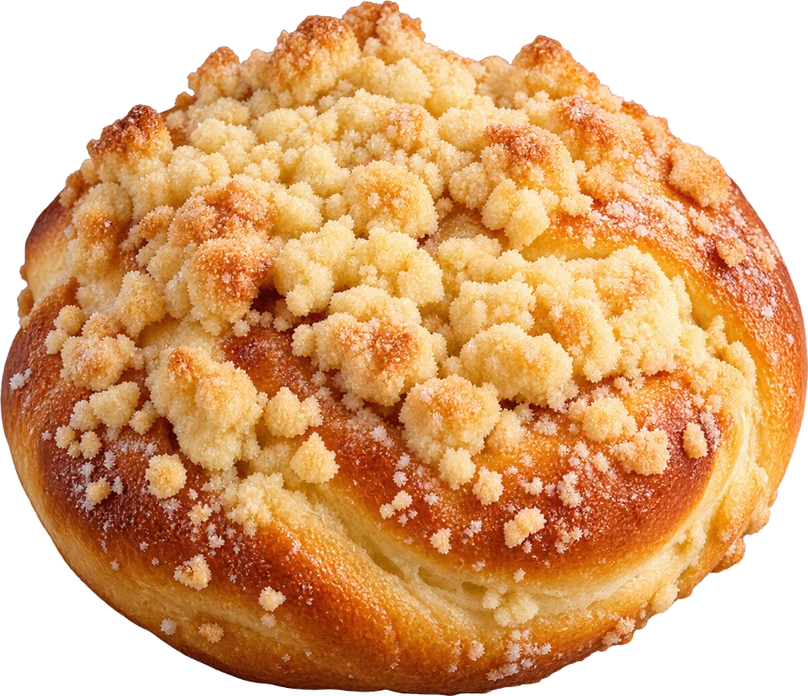

Babcia Irena
Piekła drożdżówki dla sąsiadów z kamienicy przy Zgierskiej. Po roku ustawiała się po nie kolejka na klatce schodowej.
Start / O nas
trzy pokolenia
Od kuchni w kamienicy na Bałutach do trzech cukierni. Przepis na kruszonkę się nie zmienił: masło, mąka i cukier po równo.

pieczemy w Łodzi od roku
Każde pokolenie dołożyło coś swojego, ale żadne nie zmieniło kruszonki.
Piekła drożdżówki dla sąsiadów z kamienicy przy Zgierskiej. Po roku ustawiała się po nie kolejka na klatce schodowej.
Otworzył pierwszą cukiernię na Piotrkowskiej i nauczył się piec torty na zamówienie. Dziś prowadzi wszystkie trzy lokale.
Po szkole cukierniczej we Francji wróciła do pracowni. Od niej są makaroniki, pithivier i tort red velvet.
dzień w pracowni na Bałutach
Pierwsza zmiana zaczyna od drożdżówek. Ciasto rośnie godzinę w cieple pieca.

Smażymy na smalcu po dwie minuty z każdej strony, nadziewamy ręcznie różą.

Trzy kursy: Bałuty, centrum, Widzew. Ciastka jadą w drewnianych skrzynkach.

Drugi raz pączki i serniki na popołudnie. Do 12:00 przyjmujemy zamówienia na ten sam dzień.

Biszkopty pieczemy dzień wcześniej, żeby odpoczęły. Krem i owoce dopiero rano.

Ostatnia rzecz przed zamknięciem: dwadzieścia kilo kruszonki do lodówki, na rano.
skąd to bierzemy
Masło 82%, też do kruszonki. Margaryny nie ma w pracowni wcale.
80 kmOd kur z wolnego wybiegu, przywożone dwa razy w tygodniu.
15 kmMielony trzy razy, dlatego sernik jest gładki bez dodatku mąki.
80 kmPłatki róży z ogrodu pod Brzezinami, gotowane w czerwcu na cały rok.
30 kmTruskawki i wiśnie w sezonie, mrożone z tego samego sadu zimą.
2 kmPszenna typ 450 do biszkoptów i 650 do drożdżowego.
60 km